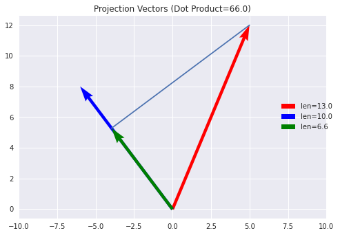
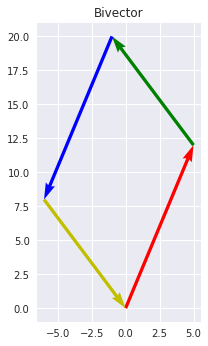
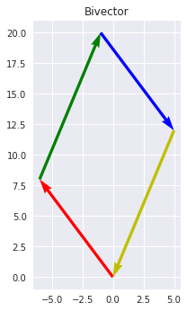

import matplotlib.pyplot as plt
import numpy as npSubspaces
Summary: Vectors are 1D. Bivectors are 2D. Trivectors are 3D. n-vectors are nD. In general, these entities are called “blades”. Basis Blades are basis n-vectors constructed with the wedge (\(\wedge\)) product.
plt.style.use('seaborn')Vectors are 1-Dimensional
Vectors represent lines, or 1D subspaces. Despite this, in Linear Algebra vectors are used to represent planes, albeit in an awkward way. Since vectors don’t have enough dimensions to represent a plane, we construct normal vectors to represent them.
Instead, why not just have 2D vectors? Seems simple, but how do you construct 2D vectors? First, consider the opposite case of constructing a lower dimensional subspace. The dot product is an operator that takes two vectors and returns a scalar. Numerically, this is just a sum of the products of corresponding elements of each vector:
For example, if we have \(v_1 = [5, 12]\), and \(v_2 = [-6, 8]\), the dot product is: \(v_1 \cdot v_2 = (5)(-6) + (12)(8) = 66\)
vec1 = np.array([5., 12.])
vec2 = np.array([-6., 8.])
np.dot(vec1, vec2)66.0But geometrically, you can interpret the dot product as the length of \(v_1\) multiplied by the length of the projection of \(v_2\) onto \(v_1\):
def calc_projection_vector(vec1: np.ndarray, vec2: np.ndarray) -> np.ndarray:
"""Calculate the projection vector of vec1 onto vec2"""
vec2_magnitude = np.linalg.norm(vec2)
projection_magnitude = (np.dot(vec1, vec2) / vec2_magnitude)
projection_direction = vec2 / vec2_magnitude
projection_vec = projection_magnitude * projection_direction
return projection_veccalc_projection_vector
calc_projection_vector (vec1:numpy.ndarray, vec2:numpy.ndarray)
Calculate the projection vector of vec1 onto vec2
def plot_dot_product(vec1: np.ndarray, vec2: np.ndarray) -> plt.Figure:
"""Visualize the dot product"""
fig, ax = plt.subplots(1, 1)
origin = np.array([0, 0])
colors = ('r', 'b')
for color, vec in zip(colors, (vec1, vec2)):
ax.quiver(*origin, *vec, scale=1, scale_units='xy', width=0.01, color=[color],
label=f'len={round(np.linalg.norm(vec), 2)}'
)
try:
projected_vector = calc_projection_vector(vec1, vec2)
ax.quiver(*origin, *projected_vector, scale=1, scale_units='xy', width=0.01, color=['g'],
label=f'len={round(np.linalg.norm(projected_vector), 2)}'
)
projection_line = np.array([projected_vector, vec1]).T
ax.plot(*projection_line)
except ZeroDivisionError as zerr:
print('Encountered zero division! Cannot plot projected vector')
ax.set_title(f'Projection Vectors (Dot Product={np.dot(vec1, vec2)})')
ax.set_aspect('equal')
ax.set_xlim([-10., 10])
return figplot_dot_product
plot_dot_product (vec1:numpy.ndarray, vec2:numpy.ndarray)
Visualize the dot product
fig = plot_dot_product(vec1, vec2)
plt.legend(bbox_to_anchor=(1.04, 0.6))
plt.show()
Lowering the dimensionality of the subspace has to do with projection. To get a higher dimensional subspace, we need to do the opposite of projection, i.e extension.
Bivectors
We can construct a 2D object by extending the two vectors into a parallelogram. This new 2D object is called a bivector, or a 2-vector. In math notation we write \(a \wedge b\).
Alternatively, we can decompose \(a\) and \(b\) into each orthogonal (perpendicular) basis. This is exactly like splitting a vector into it’s \(x\) and \(y\) components, although in the geometric algebra literature it’s common to refer to the bases as \(e_1\) and \(e_2\).
For example, \(a = \alpha_1 e_1 + \alpha_2 e_2\) and \(b = \beta_1 e_1 + \beta_2 e_2\), where the greek letters are scalars. You can see the full derivation in the Geometric Algebra Primer (Chapter 2.1.1), but know that \(a \wedge b = (\alpha_1 \beta_2 - \alpha_2 \beta_1) e_1 \wedge e_2\).
Notice anything about \((\alpha_1 \beta_2 - \alpha_2 \beta_1) e_1 \wedge e_2\)? The scalar factor is the determinant of a \(2\times 2\) matrix. The value corresponds to the area of a parallelogram created by the vectors \(a\) and \(b\).
Note that people tend to abbreviate \(e_1 \wedge e_2\) as \(e_{12}\).
def plot_bivector(vec1: np.ndarray, vec2: np.ndarray) -> plt.Figure:
"""Plot a bivector given two vectors"""
origin = np.array([0., 0.])
vectors = (vec1, vec2, -vec1, -vec2)
colors = ('r', 'g', 'b', 'y')
fig, ax = plt.subplots(1, 1)
for color, vec in zip(colors, vectors):
ax.quiver(*origin, *vec, scale=1, scale_units='xy', width=0.02, color=[color])
origin += vec
ax.set_title('Bivector')
ax.set_aspect('equal')
return figplot_bivector
plot_bivector (vec1:numpy.ndarray, vec2:numpy.ndarray)
Plot a bivector given two vectors
fig = plot_bivector(vec1, vec2)
plt.show()
# A bivector with the same magnitude, but opposite orientation
fig = plot_bivector(vec2, vec1)
plt.show()
Notice that orientation matters! We use positive and negative signs to denote orientation, so \(a \wedge b = - b \wedge a\)
We aren’t just restricted to bivectors. There are many vectors of arbitrary dimension, which we call blades:
- Scalars are 0-blades
- 2, 42, \(\tau\), 13.6, \(\pi\), etc
- The vectors we are used to from Linear Algebra are 1-blades
- \(v = 102e_1 + 4e_2 + 69e_3 - 30e_4\)
- Bivectors are 2-blades
- \(A = 420 e_1 \wedge e_2\) (‘A’ for area)
- Trivectors are 3-blades
- \(V = -256 e_1 \wedge e_2 \wedge e_3\) (‘v’ for volume)
- k-vectors are k-blades
- \(C = 1.618 e_1 \wedge e_2 \wedge ... \wedge e_k\) (no reason for ‘C’)
The number in front of the word blade, like 2 or \(k\), is the grade of the blade.
Note that you can have a k-dimensional blade existing in a n-dimensional space, as long as \(k \leq n\).
Readings
Geometric Algebra Primer (Suter, 2003)
- Chapter 2 Introduction
- Chapter 2.1 Bivectors
- Chapter 2.3 Blades
What’s Next?
Next, we look at representing basis blades on a computer.